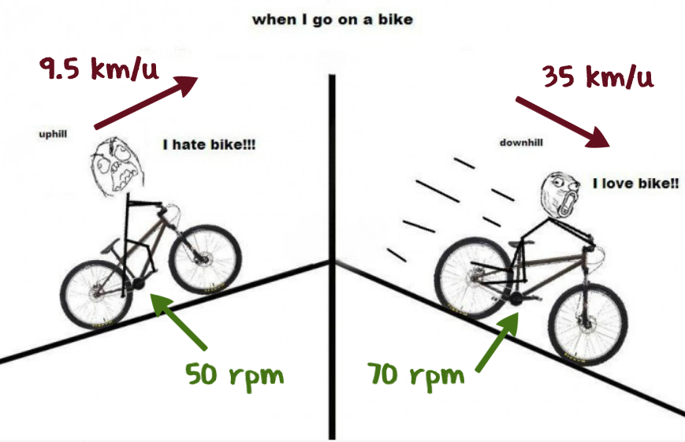

Als men bij de aankoop van een elektrische fiets de versnellingen bespreekt, wordt de focus al snel vernauwd tot het aantal versnellingen en het type versnelling. De belangrijkste factor in de keuze van een fiets is nochtans het verzet of de verhouding die bestaat tussen de snelheid van de trappers en die van de fiets. Er bestaan verschillende manieren om deze verhouding aan te duiden. Voor het TGVelo label werd gekozen voor een zeer aanschouwelijke manier.
De trap 50 is de snelheid die de fiets bereikt in lichtste versnelling als de fietser de pedalen ronddraait aan 50 toeren per minuut. Het is de laagste snelheid waarbij de fietser theoretisch nog vlot de pedalen kan ronddraaien bij betrekkelijk hoge belasting.
De trap 70 is de snelheid die de fiets bereikt in zwaarste versnelling als de fietser de pedalen ronddraait aan 70 toeren per minuut. Als men er van uitgaat dat de fietser niet graag heel snel trapt, is dit de hoogste snelheid waarbij de fietser nog min of meer comfortabel kan meetrappen.
De trap 50 en trap 70 zijn heel eenvoudig thuis op te meten. Schakel de fiets in lichtste / zwaarste versnelling, meet hoever de fiets verplaatst is in meter, vermenigvuldig met 50 of 70, en men heeft de verzetsnelheid in meter per minuut. Vermenigvuldig met 0,6 en men heeft de verzetsnelheid in km/u.
Tabellen om het versnellingsbereik van verschillende systemen te vergelijken hebben niet veel praktisch nut zonder de informatie over de bandenmaat en de overbrengingsverhouding tussen de tandwielen waar de ketting op loopt. Om een goede fietskeuze te maken moet men het snelheidsgebied kennen, de trappen 50 en 70 kiezen, en dan beoordelen of men voldoende stappen heeft in het snelheidsgebied waar de fiets het meest gebruikt zal worden. Veel elektrische fietsen hebben in praktijk slechts 2 versnellingen nodig, of worden slechts in 1 verzet gebruikt.
Met deze tool kun je verschillende versnellingssystemen vergelijken.
Snelheidsbereik gebasseerd op een kadans van 50 rpm voor de ondergrens en 70 rpm voor de bovengrens.
$ω_c$ Rotatiesnelheid pedalen / kadans in rpm (toeren per minuut)
$D_w$ Diameter achterwiel in inch.
$T_c$ Aantal tanden op het kettingblad vooraan.
$T_r$ Aantal tanden op het kettingblad achteraan.
$r_{min}$ Laagste verzet
$r_{max}$ Hoogste verzet
Wanneer de afstand voor één pedaalomwenteling gekend is (in m), dan kan de snelheid (in km/u) voor een specifieke kadans (in rpm) berekend worden.
$v = \text"afstand" ⋅ ω_c ⋅ 0.06$
The laagste comfortabele snelheid wordt berekend op basis van het laagste verzet van de busversnelling $r_{min}$ en een kadans $ω_c$ van 50 rpm.
\[\table v_{min}, =, D_w ⋅ 0.0254 ⋅ π ⋅ r_{min} ⋅ T_c / T_r ⋅ ω_c/60 ⋅ 3.6\]
Het getal 0.0254 is voor de conversie van inch naar meter. 50 rpm wordt door 60 gedeeld om naar toeren per seconde te gaan. Ten laatste wordt nog eens vermenigvuldigd met 3.6 om naar km/u te gaan. Bijvoordbeeld voor de Rohloff 14 geeft dit onderstaande berekening.
\[\table v_{min}, =, 28⋅0.0254⋅3.1415⋅0.279 ⋅ 46 / 22 ⋅ 50/ 60 ⋅ 3.6; , =, 3.9 \text" km/u" \]
Analoog kan de hoogste snelheid voor de Rohloff 14 berekend worden op basis van $r_{max}$ en een kadans $ω_c$ van 70 rpm.
\[\table v_{min}, =, D_w ⋅ 0.0254 ⋅ π ⋅ r_{max} ⋅ T_c / T_r ⋅ ω_c/60 ⋅ 3.6; , =, 28⋅0.0254⋅3.1415⋅1.467 ⋅ 46 / 22 ⋅ 70/ 60 ⋅ 3.6; , =, 28.8 \text" km/u" \]